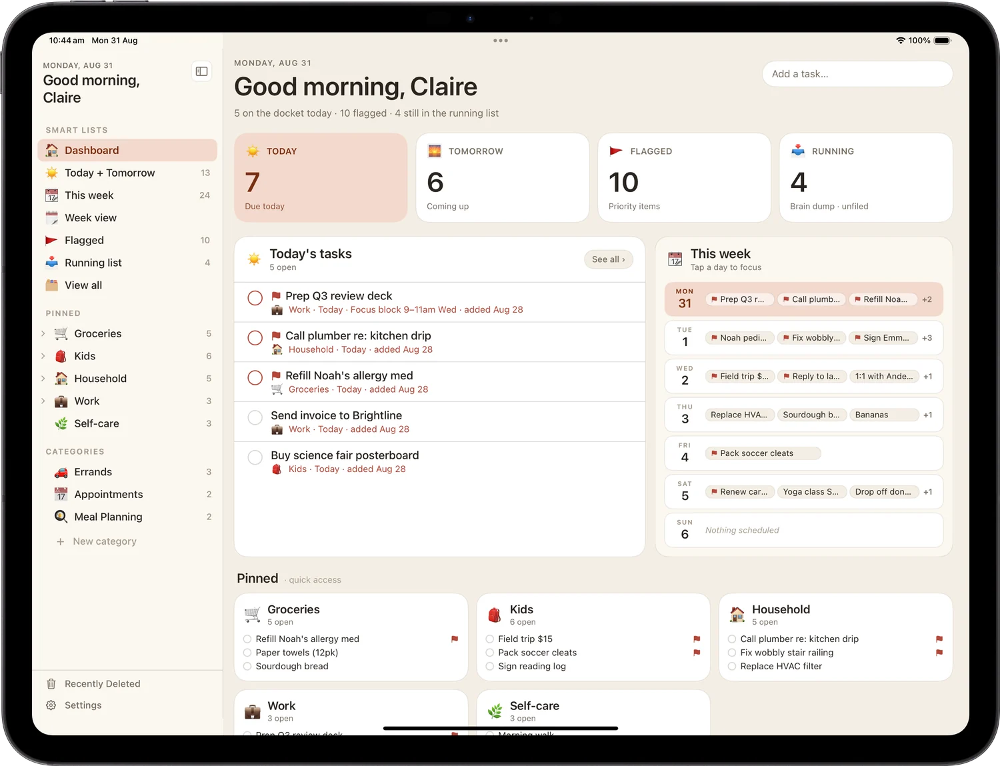
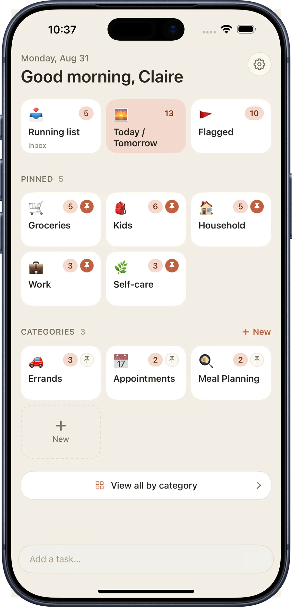
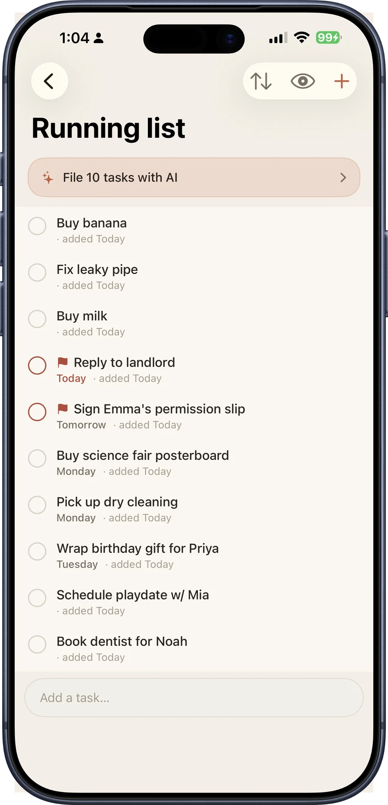
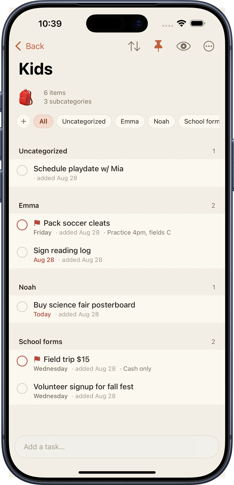
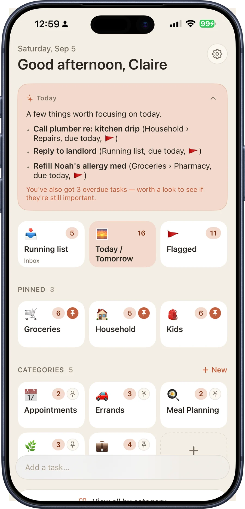
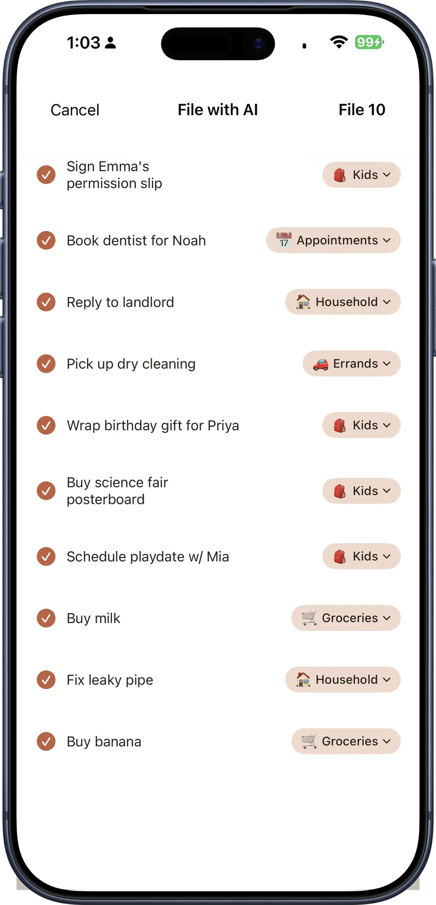
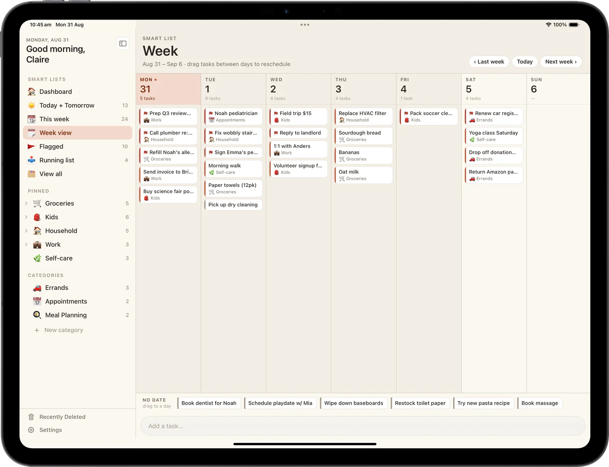
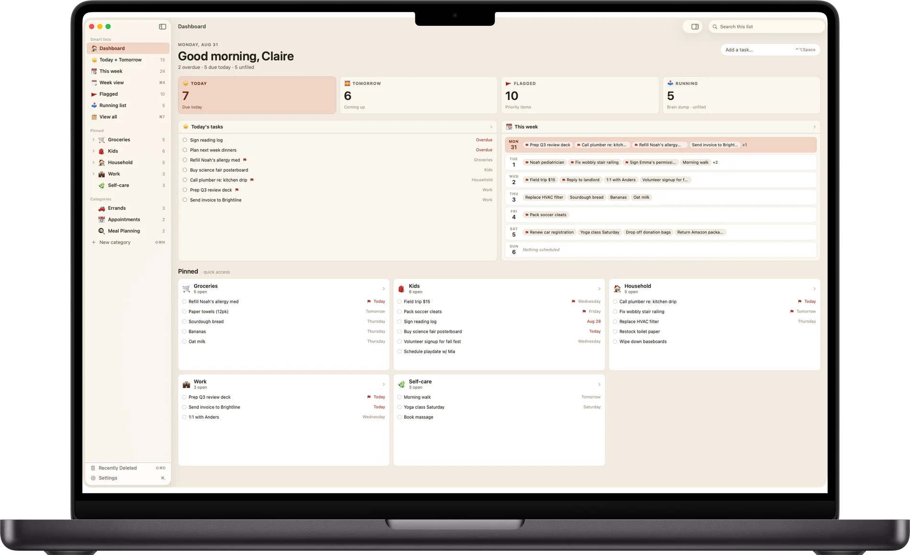

The list that keeps up with everything you're holding.
A warm, visual to-do app for people juggling everyday life. Brain-dump anything the moment it hits you, then file it when you're ready.
Free to download.
iPhone, iPad, and Mac. No account, no sign-up.
One list, every screen


Capture
Brain-dump now. Sort it later.
The Running list is your inbox. Type the thing the second it hits you. No category, no due date, no decisions up front. Then file it whenever you're ready, which might be Sunday.
Capturing never gets in the way of doing. The add bar sits on every screen, and Siri and Shortcuts work too.

Organize
Categories, and rooms inside them.
Groceries, Kids, Household, Work. Each one gets its own emoji and colour. Pin the ones you live in so they sit at the top.
When one list gets crowded, split it into subcategories: Emma, Noah, School forms. Swipe to flag what matters, drag and drop to reorder, and set a due date so nothing slips.

Busy B Intelligence
A little help with the pile, all on your device.
Busy B Pro adds three quiet uses of on-device intelligence, built with Apple Intelligence. Every one runs on your iPhone, iPad, or Mac. Nothing about your tasks is sent to a server, ours or anyone else's, and nothing you put in Busy B is used to train a model.
- Daily briefing: open the app to a short read of what actually matters today, drawn from your own list
- One-tap filing: sort a full Running list inbox into the right categories in a single tap, with a review step before anything moves
- Catch-up: a look at the tasks that keep lingering, each with a suggested next step


The briefing, one-tap filing and catch-up need a device that supports Apple Intelligence, with it turned on in Settings. Everything else in Busy B works on every supported device.
Add it by voice
Say it, and it's added.
Busy B Pro puts a mic on the add bar. Tap it, say the task, and it's transcribed entirely on your device. On a device that supports Apple Intelligence, Busy B also fills in the date, category, and flag before it saves.
Rather not open the app at all? Siri works too, free for everyone on iOS 27 or later: "Hey Siri, add pick up dry cleaning tomorrow to Household in Busy B."
On iPad
A real iPad app, three panes wide.
The Command Center is a full three-pane layout: smart lists, your tasks, and the details beside them. Week view lays out all seven days at once, and you drag a task between days to reschedule it.

On Mac
A native Mac app, menu bar and all.
A real window with real keyboard shortcuts (⌘1–⌘5) to jump straight to a smart list. Same sidebar, same tasks, same iCloud account as your phone and iPad.

What's in it
Simple enough to open and start typing.
Powerful enough to organize a busy life.
- Running list: capture anything, anytime, sort it when you're ready
- Today & Tomorrow: see exactly what matters right now
- Categories: organize your way, right from the start
- Subcategories: nest and group tasks within a category
- Flag & file: swipe to flag what's important or drop it in a category
- Due reminders: gentle nudges so nothing slips
- Repeating tasks: the ones that come back every week
- Week view: drag tasks between days to reschedule
- iPad Command Center: a three-pane layout built for iPad
- iCloud sync: your tasks, everywhere, automatically
- Nine themes: hand-crafted palettes, each with dark mode
- Daily briefing: an on-device read of what matters today
- One-tap filing: file a whole inbox into categories in a tap
- Catch-up: surfaces tasks that keep lingering
- Mac app: a native window with its own menu bar and keyboard shortcuts
- Voice capture: tap the mic, say the task, Busy B fills in the rest
- Siri: "add a task to Busy B" works hands-free, free for everyone
Unlimited categories, subcategories, the full theme collection, Busy B Intelligence, and voice capture come with Busy B Pro, available inside the app. Siri stays free for everyone.
Where it runs
Same list, whichever device is closest.
Add it on the phone, sort it out on the iPad, review it on the Mac. iCloud keeps all three current without you thinking about it.
iPhone
Tiles for the day, a running inbox, and one-thumb adding. iOS 18 or later.
Available nowiPad
The three-pane Command Center and Week view. iPadOS 18 or later.
Available nowMac
A native window, real keyboard shortcuts, its own menu bar. macOS 15 or later, Apple silicon.
Available nowYour list, yours
No account. No sign-up. No servers of ours.
Your task data stays yours, synced privately through your own iCloud account, straight between your devices. There's nothing to create, nothing to log into, and no copy of your week sitting on a server we run, because we don't run one.
Start with today's list.
Free on the App Store.
iPhone, iPad, and Mac.
Questions, bugs, or an idea for the app? Write to support@busybplanner.com and a human answers, usually within a day or two. Common questions are already answered on the support page.